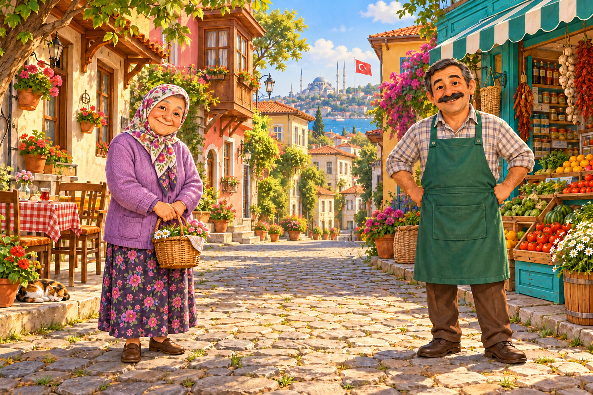

KOMŞULARINLA SOHBET ET
Nasılsın komşum?
Önce Ayşe Teyze ve Mehmet Amca’ya tıkla. Onlara “Nasılsınız?” diye sor.
☆ ☆
0 / 2 sohbet tamamlandı BİZİM MAHALLE☀ Güzel bir gün!

☝Konuşacağın kişiye tıkla.İstediğin komşudan başlayabilirsin.● ● ●
2. AŞAMA • İZLE VE KONUŞ
Peki, sen nasılsın?
Videoyu izle ve soruyu cevapla.
0 / 1 soru
Videoyu izliyorsun
0:00 / 0:43
Soruyu cevapla, Tamam ile devam et.